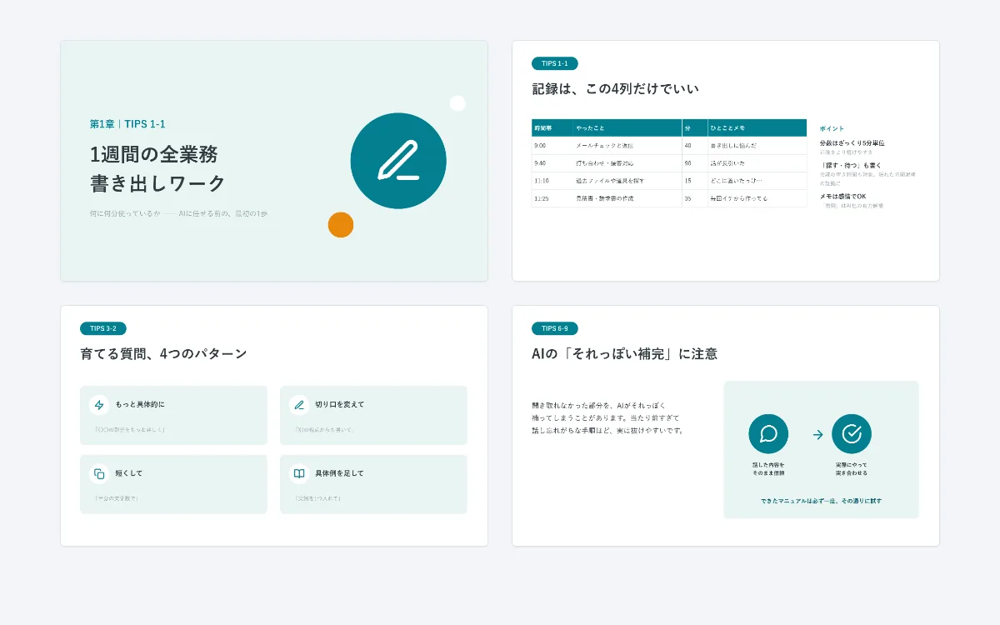
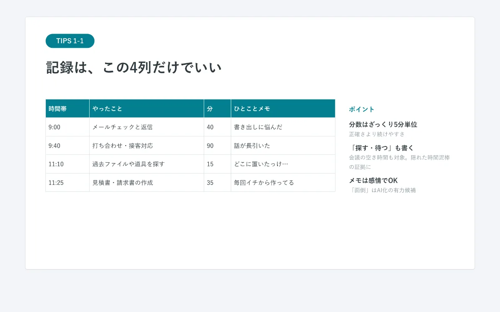
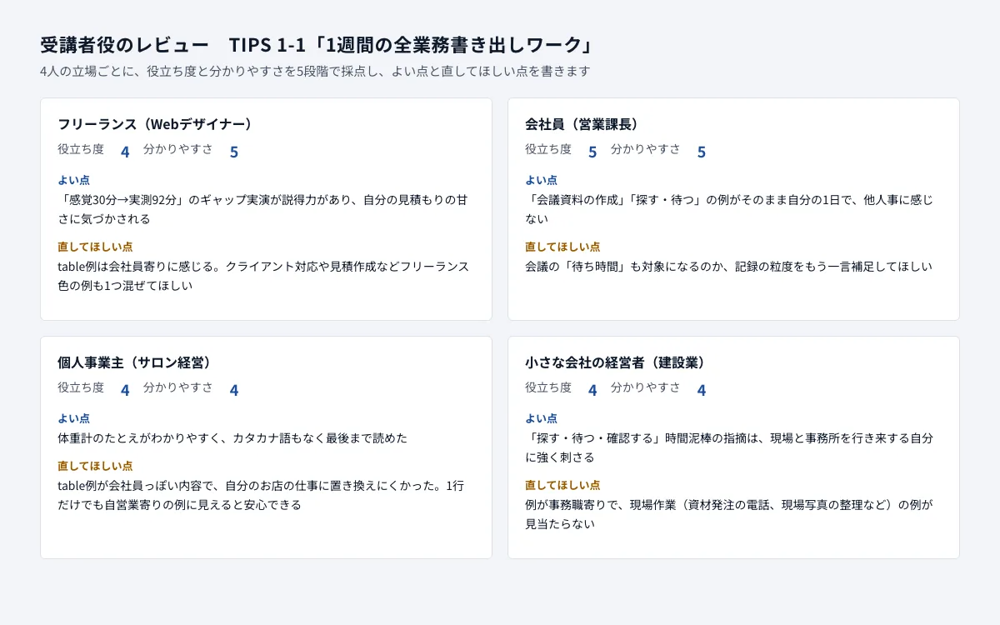
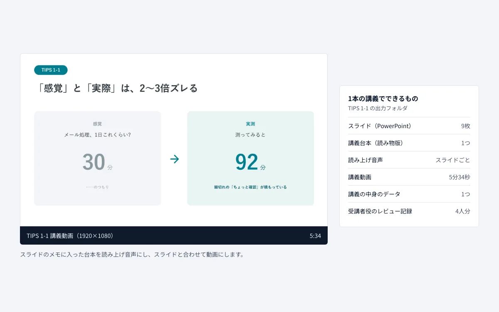

AI講座の講義を自動で作る仕組み
初心者向けのAI業務改善講座の講義を、AIが作り、受講者役のAIが点検し、直すところまで自動で回す仕組みです。この仕組みと、同じ型を使った作成の手順で、スライド・台本・読み上げ音声つきの動画まで121本の講義を作りました（受講者役の点検を通したのは、そのうち72本です）。自分の講座のために企画から開発まで行いました。

困りごと
「初心者向けの講座を、100本を超える講義で作りたい。1本ずつ手で作ると、スライドの見た目や言葉の難しさがばらつく。だれにとって分かりにくいかも、自分ひとりでは確かめきれない。」
そこで、AIには講義の中身だけを作らせ、見た目は決まった型で描き、立場のちがう受講者役のAIが点検して直す流れを、自動で回すことを目指しました。
作ったもの

中身はAI、見た目は型で固定
AIが作るのは、講義の中身（文字のデータ）だけです。スライドの見た目は、講座の段階（初級・中級）ごとに決めた型で描くので、同じ段階の講義はすべて同じデザインになります。

受講者役の4人が点検して直す
立場のちがう4人（フリーランス・会社員・個人事業主・小さな会社の経営者）になりきったAIが、役立ち度と分かりやすさを5段階でつけ、直してほしい点を書きます。その声をもとにAIが直し、スライドを描き直します。この点検を通したのは72本です。

台本と音声つきの動画まで
スライドのメモに入れた台本を読み上げ音声にして、スライドと合わせた動画にします。121本の講義で、動画は合わせて約9時間分です。
画面は、この仕組みで実際に作った講義のスライドと記録です。レビューの画面は、記録のファイルを見やすく並べ直したものです。
工夫したこと
- ずれを判定する基準を1つにまとめる
- だれ向けか・何を優先するかを1つのファイルに書き、点検つきの流れで作る講義は、1本ごとにそこからずれていないかを AI が確かめます。第1〜6章は、最後に全章をまとめてもう一度確かめました。
- AI の指摘をうのみにしない
- 受講者役の指摘は、すべてをそのまま直すのではなく、講座の方針に合うかで直すかどうかを決めます。判断のもとになったレビューの原文は、記録として残します。
- 声と読み方をそろえる
- 読み上げの声・速さ・抑揚を固定し、読み間違えやすい言葉は読み方の辞書で直してから音声にします。
進め方
どの仕組みも、次の5つの観点で整理して作っています。
- 目的から決める
だれが・いつ・何のために使うかを先に決め、「どうなれば完成か」を1つずつ言葉にする
「ITが苦手な初心者を振り落とさない」を最優先に決め、講義ごとのワークや長さの決まりも、この基準に書きました。
- 続けられる使いやすさ
使う人が無理なく続けられる分量と読みやすさを、先に決める
受講者が読みやすいように、スライドは1枚に1つのことだけを書き、見出しと本文の長さに上限を決めました。
- データの安全
どのデータをどこへ送ってよいかを先に決め、それ以外には送らない
AI と音声サービスの利用キーはプログラムに書かず、パソコンの設定から読みます。外に送るのは講義の設計と台本だけです。
- 壊さない・失わない
直しても崩れない作りにし、前の状態に戻せるようにする
直すときは講義の中身のデータだけを直して描き直すので、見た目が崩れません。作り直す前の出力は控えを残しています。
- 使いながら育てる
実際に使い、気づいた所を直す
中級の講義は、初級で決めた基準と型を引き継ぎ、中級向けの基準と色の型を足して作りました。
安全とデータの扱い
- AI（Claude）には、講義の設計・講座の方針・受講者役の設定・講義の中身だけを送ります。個人の情報は扱いません。
- 音声サービス（ElevenLabs）には、読み上げる台本の文だけを送ります。
- スライドを画像にする作業と、動画をつなぐ作業は、パソコンの中だけで行います。
- 利用キーはプログラムやファイルに書かず、パソコンの設定（環境変数）にだけ置きます。
- AI の点検は参考として使い、最終的な確認は人が行います。
納品物のイメージ
- 仕組み一式
- プログラムと設定のファイル（講座の方針・受講者役の設定・AI への指示文）。方針のファイルを書きかえると、すべての講義の判定基準が変わります
- 使い方の手順書
- 準備から、1本だけ作る・まとめて作る・最後に全体を確かめるまでの手順
あわせて、次の資料もお付けします。
- 出力のサンプル
- スライド・講義台本・講義動画・レビューの記録の実物
見本の仕組みは自分用のため、一部そろっていない資料もあります。